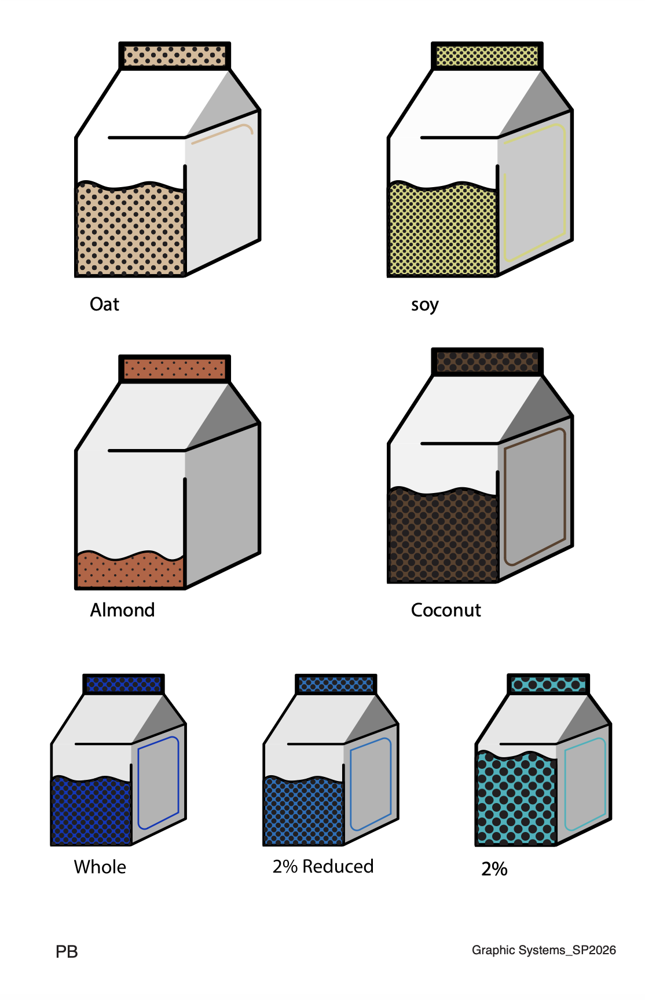
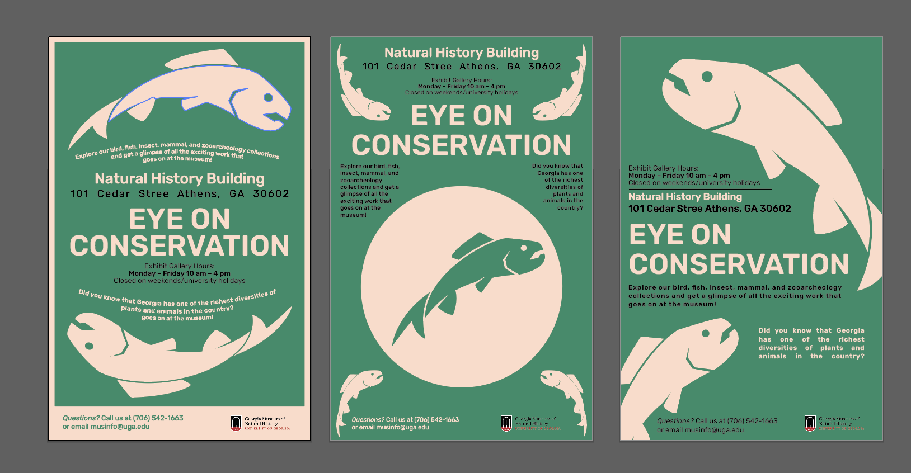
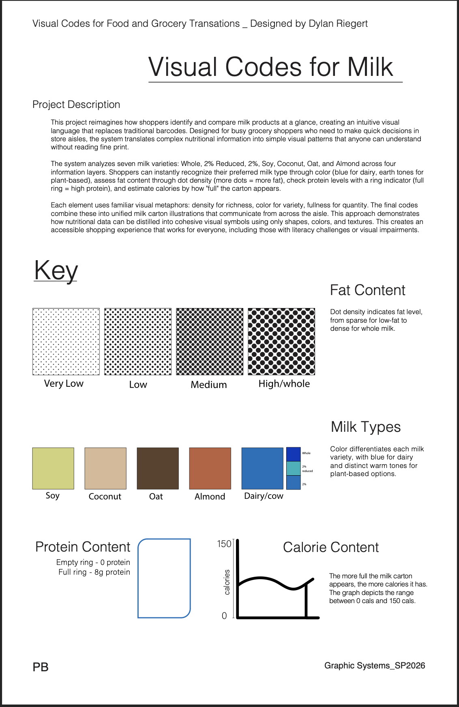

Visual System
Visual Codes for Milk
A packaging system using color, patterns, and simple symbols to help shoppers identify types of milk at a glance.
Selected Projects
A selection of graphic design, information design, poster, and visual-system projects.

Visual System
A packaging system using color, patterns, and simple symbols to help shoppers identify types of milk at a glance.

Poster Campaign
A museum exhibition campaign that pairs animal illustration with bold typography and an approachable visual voice.

Event Poster
A textured concert poster inspired by live music, vintage print design, and a mountainous landscape.

Information Design
A clear visual guide explaining the color, fat, protein, and calorie codes used throughout the milk system.